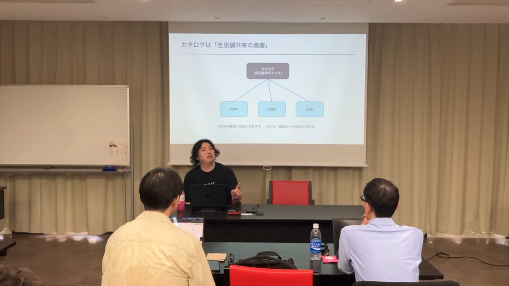
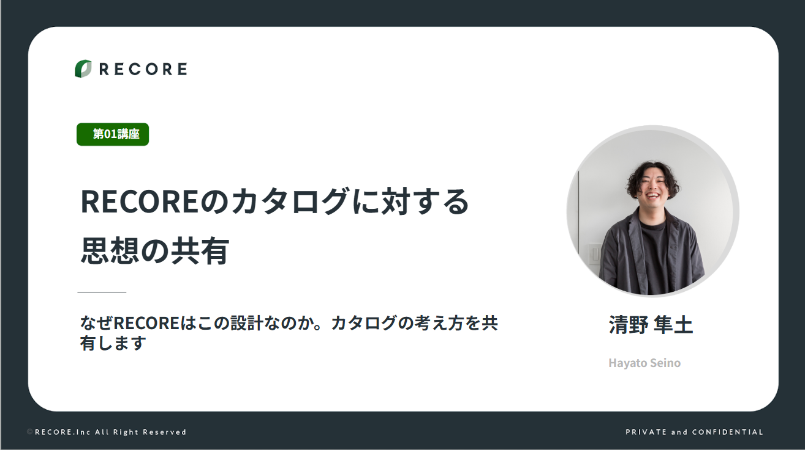
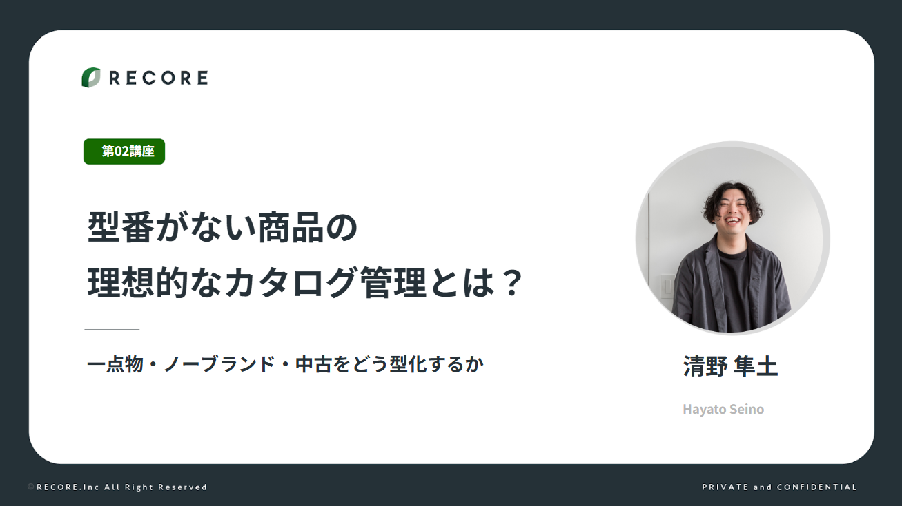

| 開催日時 | 2026年6月19日（金）15:00〜17:00 |
|---|---|
| 開催場所 | としま区民センター 懇親会：17:00〜（ケータリング） |
| 参加者数 | 集計中 |
| 参加企業 | 集計中 |
| 主催者 | 株式会社RECORE（清野） |
関東エリアのRECORE利用顧客コミュニティとして、参加者同士の対話と次につながる関係構築を促しながら、RECOREのカタログ設計思想を共有することを目的に開催しました。
関西イベントの振り返り（成功定義を厳格にせず対話・関係構築を重視する）を反映。単なる機能紹介ではなく「RECOREはなぜこの設計なのか」という思想レベルの共有にこだわり、清野（株式会社RECORE カスタマーサクセス）が登壇しました。

15:00〜17:00（本編、約2時間）／17:00〜 懇親会（ケータリング）


運営メンバー3社（ブックオフコーポレーション株式会社・株式会社アクト・バイチャリ株式会社）と株式会社RECOREの共催で、ReCOREコミュニティ関東第3回イベントを開催しました。
株式会社RECORE 清野より、カタログの親子構造・属性設計といったRECOREの設計思想と、型番がない商品をどう型化するかという実践的なノウハウを共有しました。単なる機能紹介にとどまらず「なぜこの設計なのか」という思想レベルまで踏み込んだことで、参加者の日々の登録業務の意味づけにつながる時間となりました。
お会いできる日を楽しみにしております！
第3回イベントへのご参加ありがとうございました。
次回のイベント情報は準備でき次第、こちらでお知らせいたします。